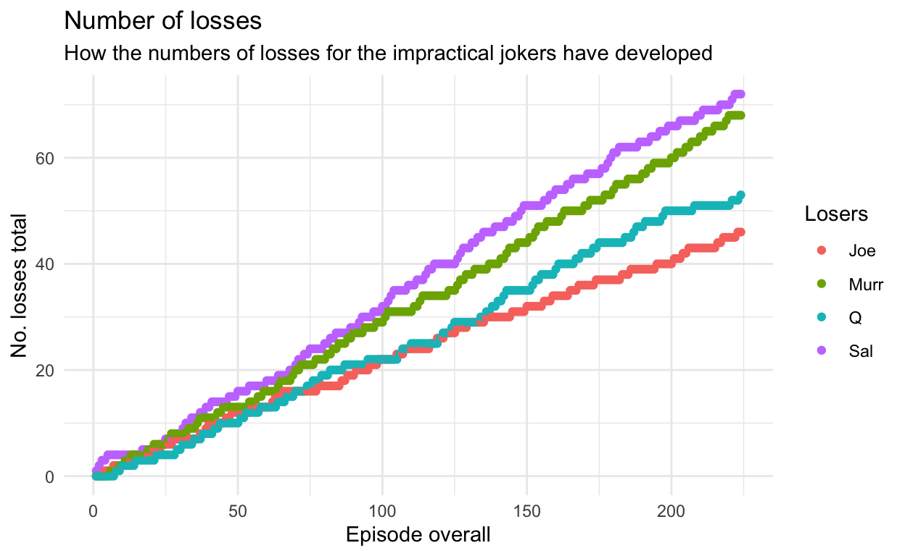
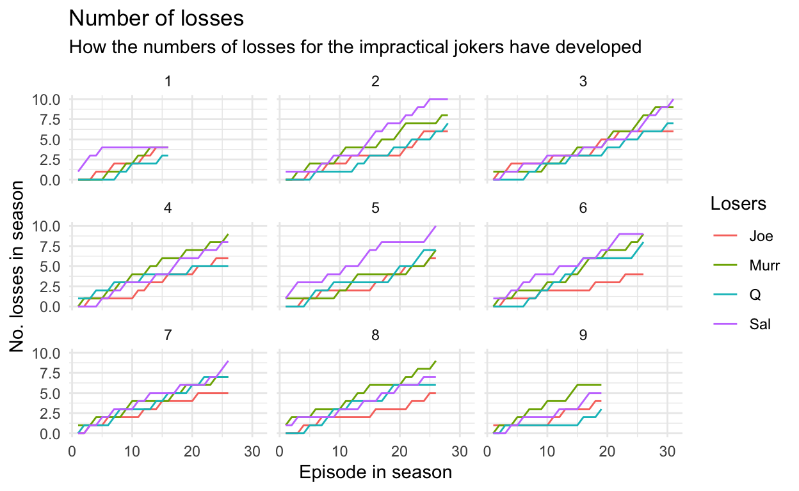
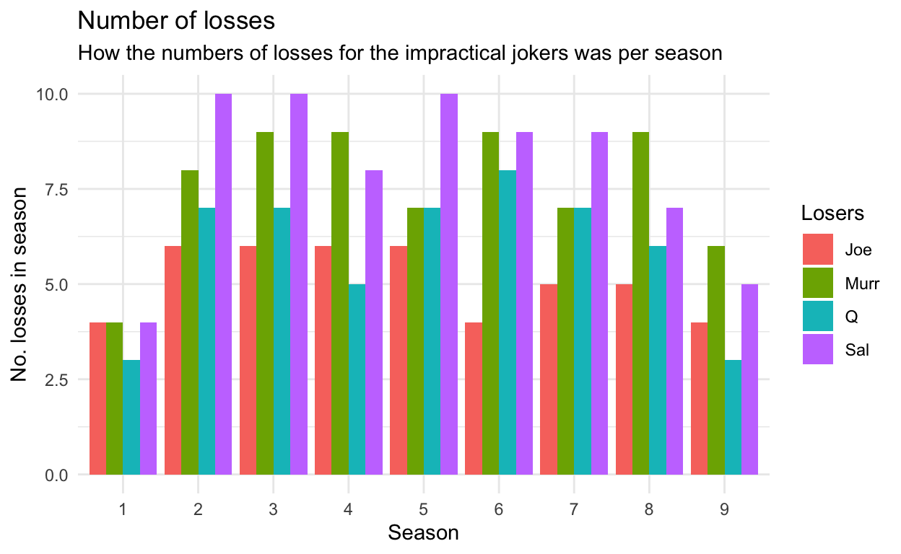

A short analysis of the losers at impractical Jokers
The popular show Impractical Jokers is an interesting mixture between a comedy/hidden camera prank show and a game show. In it, “four lifelong friends continue to embarass each other”. Joe Gatto, James Murray, Brian Quinn and Sal Volcano pose each other different types of challenges. Whenever someone cannot pass the challenge, he loses. Each episode, the person with the most losses is “tonights loser” and has to face a punishment.
In this article, we start with a small analysis work where we would like to get some understanding “who is the biggest loser”. Fans of the show will already say SAL, duh, but lets look a little bit more thoroughly. Not only to gain some (perhaps not too important) insight about these numbers but to learn some basics about Web scraping.
Data analysis is not that much without - you guessed it - data. So where do we get the impractical jokers data?
Lets get our hands dirty! I am no genius, thus I used the internet. So who would like to look for some technical details, this is where you have to go.
First, lets get the correct libraries:
To get the initial information, we neet the URL which can be subsequently analyzed by examining the correct tags:
url = 'https://en.wikipedia.org/wiki/List_of_Impractical_Jokers_episodes'
This URL in itself is already quite interesting as we can get some information about the nine seasons of impractical jokers:
data <- url %>%
read_html() %>%
html_node('body #content #bodyContent #mw-content-text .mw-parser-output table') %>%
html_table(fill = TRUE)
paged_table(data)
However, not sooo much interesting stuff here. For that we have to dig deeper:
data_final <- url %>%
read_html() %>%
html_node(xpath = paste0('//*[@id="mw-content-text"]/div/table[',2,']')) %>%
html_table(fill = TRUE) %>%
rename("No.overall" = No.) %>%
mutate(`No. inseason` = No.overall) %>%
select(No.overall,`No. inseason`,Title,`Original air date`,
`Losing Joker(s)`,`U.S. viewers(millions)`) %>%
mutate( season = 1)
for(i in 3:10){
data_new <- url %>%
read_html() %>%
html_node(xpath = paste0('//*[@id="mw-content-text"]/div/table[',i,']')) %>%
html_table(fill = TRUE) %>% mutate(season = i-1)
names(data_new) <- c("No.overall", "No. inseason","Title",
"Original air date", "Losing Joker(s)",
"U.S. viewers(millions)", "season")
data_final <- bind_rows(data_final,data_new)
}
paged_table(data_final)
Now we have all interesting data, lets tidy it up a little to get it into the correct shape:
data_final <- data_final %>% mutate(Sal = as.numeric(grepl("Sal",`Losing Joker(s)`)),
Joe = as.numeric(grepl("Joe",`Losing Joker(s)`)),
Murr = as.numeric(grepl("Murr",`Losing Joker(s)`)),
Q = as.numeric(grepl("Q",`Losing Joker(s)`)))
Finally: We have enough data to get our first plot:
data_final %>% select(No.overall,`No. inseason`,Sal,Joe,Murr,Q) %>%
mutate(Sal = cumsum(Sal),Joe = cumsum(Joe),Murr = cumsum(Murr),Q = cumsum(Q)) %>%
pivot_longer(cols = c(Sal,Joe,Murr,Q),names_to = "Losers", values_to = "value") %>%
mutate(get_lines = ifelse(`No. inseason` == 1,1,0)) %>%
ggplot(aes(x=No.overall,y=value,col=Losers)) +
geom_point() +
labs(title = "Number of losses",
subtitle = "How the numbers of losses for the impractical jokers have developed",
x = "Episode overall",y= "No. losses total") +
theme_minimal()

Now thats interesting. While we certainly see that Sal is the biggest loser we also see that Murr is catching up and that it was oftentimes a close race between the two. Moreover we see that the position of Joe als “worlds toughest Joker” came up only recently.
To examine these changes a little bit thouroughly lets see how these numbers evolved for each season:
data_final_seasons <- data_final %>%
select(No.overall,`No. inseason`,Sal,Joe,Murr,Q, season) %>%
filter(season == 1) %>%
mutate(Sal = cumsum(Sal),Joe = cumsum(Joe),Murr = cumsum(Murr),Q = cumsum(Q))
for (i in 2:max(data_final$season)){
data_final_seasons <- data_final_seasons %>%
bind_rows(data_final %>%
select(No.overall,`No. inseason`,Sal,Joe,Murr,Q, season) %>%
filter(season == i) %>%
mutate(Sal = cumsum(Sal),Joe = cumsum(Joe),Murr = cumsum(Murr),Q = cumsum(Q)))
}
data_final_seasons %>%
pivot_longer(cols = c(Sal,Joe,Murr,Q),names_to = "Losers", values_to = "value") %>%
mutate(get_lines = ifelse(`No. inseason` == 1,1,0)) %>%
ggplot(aes(x=`No. inseason`,y=value,col=Losers)) +
geom_line() +
labs(title = "Number of losses",
subtitle = "How the numbers of losses for the impractical jokers have developed",
x = "Episode in season",y= "No. losses in season") +
facet_wrap(vars(season)) + theme_minimal()

And here we have it: Yes, Sal was most of the time the biggest loser of the season. However, in seasons 1 and 6 there were some other jokers close to his count. Recently, in the seasons 8 and 9, Sal handed over the top position to Murr.
That finding can even be summarized a little bit:
data_final_seasons %>% group_by(season) %>%
slice_tail() %>%
pivot_longer(cols = c(Sal,Joe,Murr,Q),names_to = "Losers", values_to = "value") %>%
ggplot(aes(x=as.character(season), y=value, fill=Losers)) +
geom_col(position = "dodge") +
labs(title = "Number of losses",
subtitle = "How the numbers of losses for the impractical jokers was per season",
x = "Season",
y= "No. losses in season") +
theme_minimal()

There you have it (for now): While Sal definitely is currently the biggest loser of Impractical Jokers Murr was oftentimes close behind him - and recently could surpass him.
Currently I am working on an analysis of the challenges. I will post more about that when there is sth to tell :)